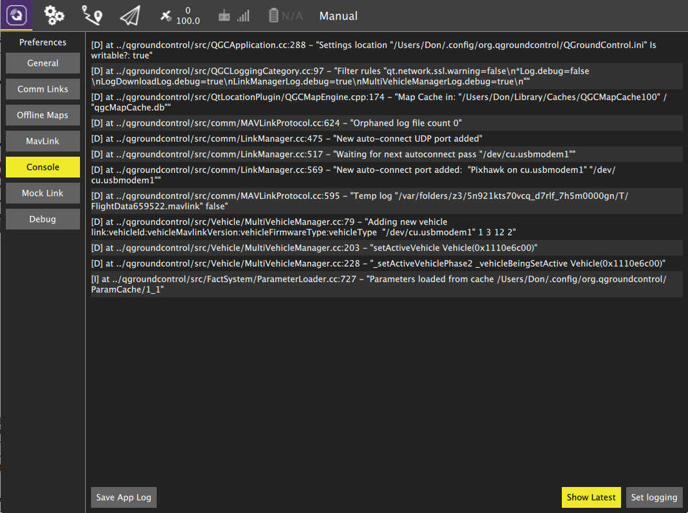

Support
This user guide is meant to be the main provider of support for QGroundControl. If you find that it is missing helpful information and/or has incorrect information please file an Issue against it.
For reporting problems or asking questions about QGroundControl please use the QGroundControl Google Group.
Console Logging

The Console can be helpful tool for diagnosing QGroundControl problems. It can be found in the Setttings view. It allows you turn turn on/off the logging options available in QGroundControl. Click the "Set Logging" button to select logging options.
Commonly used logging options
- LinkManagerLog, MultiVehicleManagerLog - Debug connection problems.
- LinkManagerVerboseLog - Very noisy connection problem debugging. Continuous output of available serial ports.
- FirmwareUpgradeLog - Debug firmware flash issues.
- ParameterLoaderLog - Debug parameter load problems.
- ParameterLoaderVerboseLog - Debug parameter load problems with full trace of parameters coming/going/in system.
- MissionManagerLog - Debug mission protocol issues.
- RadioComponentControllerLog - Debug Radio calibration issues.
Logging from the command line
An alternate mechanism for logging is using the --logging command line option. This is handy if you are trying to get logs from a situation where QGroundControl crashes.
How you do this and where the traces are output vary by OS:
- Windows
- You must open a command prompt, change directory to the qgroundcontrol.exe location, and run it from there:
cd "\Program Files (x86)\qgroundcontrol" qgroundcontrol --logging:full- When QGC starts you should see a separate console window open which will have the log output
- OSX
- You must run QGC from Terminal. The Terminal app is located in Applications/Utilities. Once Terminal is open paste the following into it:
cd /Applications/qgroundcontrol.app/Contents/MacOS/ ./qgroundcontrol --logging:full- Log traces will output to the Terminal window.
- Linux
./qgroundcontrol-start.sh --logging:full- Log traces will output to the shell you are running from.
Developer Chat
The QGroundControl developers as well as many QGGroundControl users can be found on the QGroundControl Gitter channel. If you are a heavy user of QGroundControl and want to keep up to date on the latest information or help with QGroundControl we suggest monitoring that channel.
Help out your fellow QGroundControl users
Just like QGroundControl itself, the user guide is an open source, user created and supported GitBook. We welcome Pull Requests against the guide for fixes and/or updates.